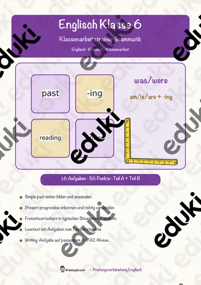
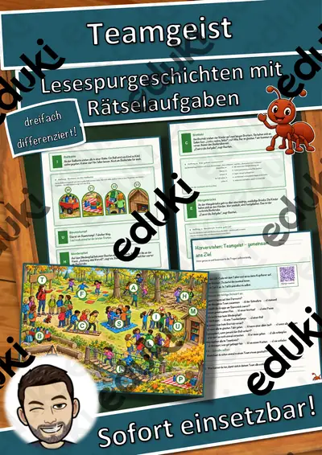
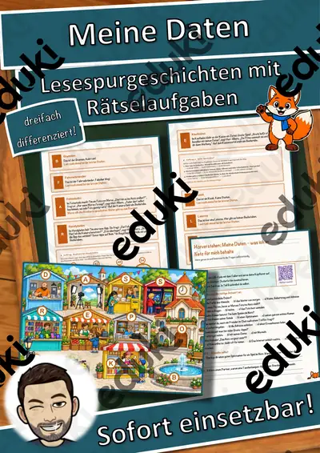

Lesespur: Trainingsplanung: wie man gezielt besser wird – Lesespurgeschichte mit Rätseln (Klasse 10)
Trainingsplanung – wie man gezielt besser wird – Lesespurgeschichte Sport (Klasse 10)Schick deine Klasse auf eine Lesespur durch einen Trainingsplan-Workshop im Sportverein! Arian trainiert, wenn er Lust hat – und steht deshalb seit einem Jahr bei derselben Zeit. Gemeinsam mit Lea lernt er, wie man gezielt besser wird: Am Beratungstresen geht es um den Eingangstest, an der Zieltafel um SMART-Ziele, an Kalenderwand, Intensitätsskala, Umfangsbahn und Pausenuhr um die vier Stellräder der Belastung. Die Kurventafel erklärt die Superkompensation, die Steigerungstreppe die progressive Belastung, der Abwechslungsparcours das Prinzip der Variation – und am Tagebuchpult wird ausgewertet, ob der Plan wirkt. Das Notizbuch Plani ist immer dabei. Am Ende jedes Abschnitts verrät ein Hinweis den nächsten Ort auf dem Plan – nur wer genau liest, findet den Weg und sammelt alle geheimen Buchstaben zum Lösungswort.
Die passende Lesespur für den SPORTUNTERRICHT der 10. Klasse – ideal für Sporttheorie, zur Vorbereitung eigener Trainingsprojekte oder für Prüfungsvorbereitung: Sie verbindet sinnentnehmendes Lesen mit trainingswissenschaftlichen Grundlagen, die Jugendliche direkt anwenden können. Das Material ist SOFORT EINSETZBAR und in DREI DIFFERENZIERUNGSSTUFEN (leicht ★ / mittel ★★ / schwer ★★★) angelegt.WICHTIG: Das komplette Material ist sowohl in FARBE als auch in SCHWARZ-WEISS enthalten – ideal zum Sparen von Druckkosten.DAS IST ENTHALTEN
- Lesespurgeschichte in 3 Niveaus (leicht, mittel, schwer)
- farbiger Raumplan als Suchkarte
- Hörverstehen mit QR-Code zur MP3 (selbstständiges Hören mit Kopfhörern)
- vier Aufträge auf dem Weg: ein Quiz, eine Rechenaufgabe, eine Zuordnung und ein Steckbrief
- Rätselseite (Wörter-Suchsel + Fragen)
- Ausmalbild zum Thema (Trainingsplan-Workshop)
- ausführliches Lösungsblatt für die Lehrkraft
- alles zusätzlich als komplette Schwarz-Weiß-VarianteSO GEHT DIE LESESPURDie Jugendlichen lesen ab START, finden im Text den nächsten Ort, suchen ihn auf dem Plan und lesen bei dieser Station weiter. An jeder richtigen Station gibt es einen Buchstaben. Eingebaute Sackgassen (Saftbar, Hantelregal, Duschbereich, Rudergerät) sind keine Stationen und dienen der Selbstkontrolle. Am Ende werden die gesammelten Buchstaben umgestellt und ergeben ein geheimes Lösungswort. (Die Lösungen sind selbstverständlich nur im Lösungsblatt für die Lehrkraft enthalten.)INHALTLICHER SCHWERPUNKTIst-Analyse mit Eingangstest, SMART-Ziele, Belastungsnormative (Häufigkeit, Intensität, Umfang, Dichte), Modell der Superkompensation, progressive Belastungssteigerung, Variation, Trainingstagebuch und Auswertung.ABGEDECKTER LEHRPLAN (Klasse 10, Sport)
- Sport (LehrplanPLUS Bayern) – Jahrgangsstufe 10 „Gesundheit und Fitness“: Training selbstständig planen, durchführen und auswerten, Belastung gezielt steuern, Trainingsprinzipien anwenden.
- Deutsch – Lesen: Sachtexten gezielt Informationen entnehmen; Zuhören: einem Sachhörtext folgen (Hörverstehen mit MP3).
- Mathematik – Multiplikation, Prozentrechnung.
- Fächerübergreifend / Kompetenzen: Biologie (Anpassung des Körpers), Selbstorganisation und Zielsetzung, genaues Lesen und Prüfen, kreatives Gestalten (Ausmalbild).
Geeignet für Freiarbeit, Stationenlernen, Vertretungsstunden, Wochenplan, Projekttage, Sporttheorie und Distanzunterricht. Klassenstufe 10.
Ähnliche Materialien

Lesespur: Der Sportverein: mitmachen, mithelfen, mitbestimmen – Lesespurgeschichte mit Rätseln (Klasse 8)

Lesespur: Smart Home: das vernetzte Haus – Lesespurgeschichte mit Rätseln (Klasse 8)

Englisch-Werkstatt: Present Progressive im Herbst – kostenlos, Klasse 5–6

Englisch-Werkstatt: Present Progressive im Herbst – Plus-Paket, Klasse 5–6

Klassenarbeitstrainer Englisch Klasse 6 – Simple Past und Present Progressive

Lesespur: Teamgeist: gemeinsam ans Ziel – Lesespurgeschichte mit Rätseln (Klasse 3)

Was bringt Bewegung dem Körper? - Homeschooling
